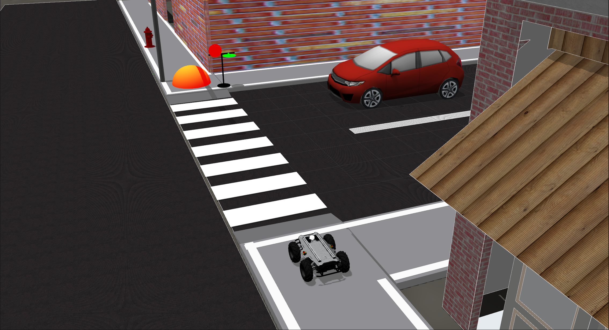

Task 2: Traffic sign detection and recognition¶

Road crossing is inevitable for delivery robots as they navigate our streets to complete their delivery task. The task of road crossing is tricky even for humans to complete safely. A major component of the task is monitoring the traffic sign to ensure you comply with it. In this task, you are required to perform traffic sign detection and recognition. We have included a traffic sign with two states (RED and GREEN).
Teams are required to develop software to use the on-board camera to detect and recognise the state of the traffic sign.
Task 2 Goal: The goal of this task is to perform safe road crossing by detecting and recognising the state of the traffic sign and crossing only when the state is GREEN (GO).
Task Guidelines¶
Note
Make sure you have completed the Getting Started Tutorials before starting the tasks.
1. Launching the Task¶
- In a new terminal, run the following launch file to bring up the delivery robot in Gazebo and RViz:
roslaunch parc-robot task2.launch
-
You should see the display below in Gazebo. The robot needs to cross the crosswalk and reach the orange-red sphere (goal location) on the other side.
-
The traffic sign is initially set to RED and would change to GREEN after the
start_delayduration is complete.

2. Explore Multiple Start Delays¶
- We have provided a simple way to set arbitrary values for the
start_delay. This can be done by passing an argument as follows (e.g. we set it to 20 here):
roslaunch parc-robot task2.launch start_delay:=20
-
While developing, we recommend you play around with different values for the start_delay to ensure your solution is robust.
-
Also we recommend you consider setting a high
start_delayvalue when running your solution to account for any code start delays when you launch your code.
3. Preparing your Solution¶
-
Your solution should be prepared as ROS packages to be saved in your solution folder [link to how to submit]. Create a launch file in your ROS package which runs ALL the code you need in your solution. Name this launch file:
task2_solution.launch. -
Hence, your solution to Task 2 should be run by calling the following commands simulatenously:
In one terminal:
roslaunch parc-robot task2.launch
In another terminal:
roslaunch <your-package-name> task2_solution.launch
Note
Ensure you DO NOT provide a solution with hard-coded move commands for the robot based on a particular start_delay value because in evaluation, the start_delay value would be randomized.
Also, NO hacks for monitoring the state of the traffic sign would be allowed, you must use a vision-based approach ONLY. If the use of a hack is found out, you will receive a ZERO score for this task.
Task Rules and Scoring¶
-
The GO-time (time duration with signal on GREEN) is set to 15 secs. This means that you have ~15 secs to cross the road and reach the goal location.
-
The task is ONLY complete when ANY part of the robot is inside the orange-red sphere (goal location marker). You are required to stop when you arrive at the goal location.
Scoring for this task would be based on the following criteria:
| S/N | Criteria / Metric | Description |
|---|---|---|
| 1 | Reaction time | Time between traffic sign state change to GREEN and when robot starts to move (Smaller is better) |
| 2 | Goal completion | 1 if robot reached the goal location, 0 otherwise |
| 3 | Safe crossing | 1 if robot is within the crosswalk ONLY when the signal is GREEN, 0 otherwise (i.e. 0 if robot is on crosswalk when signal is RED). |
| 4 | Completion time | Time from launching the solution to task completion (Smaller is better) |